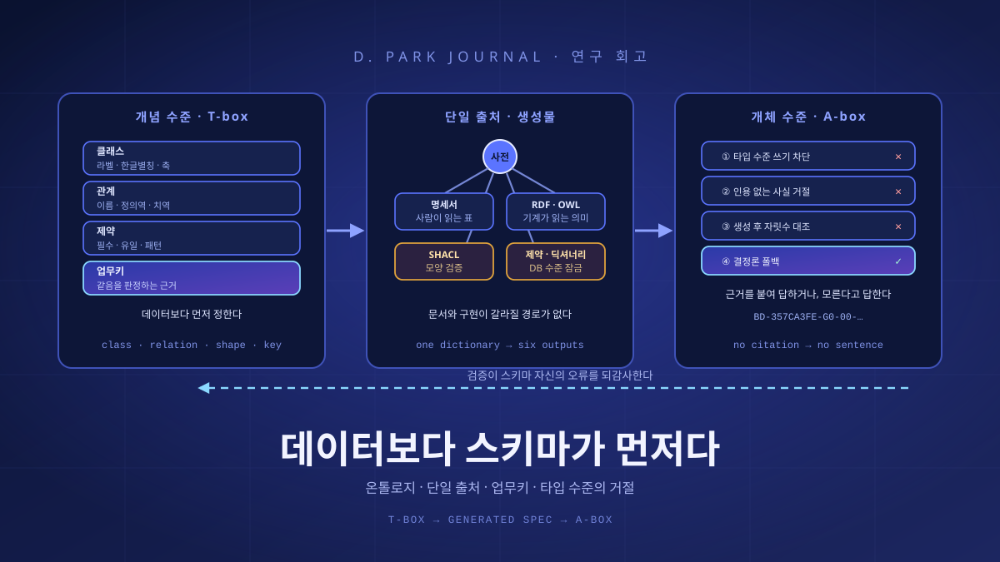

데이터보다 스키마가 먼저다
지식그래프를 만들자는 회의는 데이터 이야기로 시작하지만, 첫 커밋에 들어가는 것은 데이터가 아니라 사전이다. 무엇을 클래스라 부를지, 어떤 것을 관계로 볼지, 같은 개체를 같다고 판정할 키를 무엇으로 삼을지 — 데이터를 한 줄도 넣기 전에 정해야 하는 이 결정들은 회의만 길어지게 만드는 관료적 절차처럼 보인다. 그러나 국가주소정보 지식그래프를 국가 표준 온톨로지 위에 세우면서 나는 반대의 것을 배웠다. 스키마를 먼저 정하는 일은 지불이고, 그 대가로 사는 것이 분명히 있다는 것을.

데이터를 넣기 전에 정해야 하는 것들
지식그래프를 만들자는 회의는 대개 데이터 이야기로 시작한다. 어떤 원천이 있고, 몇 건이고, 어떤 형식이고, 어떻게 적재할 것인가. 그런데 실제로 첫 커밋에 들어가는 파일은 데이터가 아니다. 사전이다. 무엇을 클래스라고 부를지, 어떤 것을 관계로 볼지, 그 관계의 정의역(domain)과 치역(range)은 무엇인지, 그리고 같은 개체를 같다고 판정할 키는 무엇인지. 데이터는 그다음에 온다.
이 순서를 뒤집는 유혹은 강하다. 최근 십수 년의 데이터 엔지니어링은 “먼저 넣고 나중에 해석한다”는 쪽으로 기울어 왔고, 그 방향은 로그나 이벤트 스트림에서는 대체로 옳다. 스키마를 읽는 시점에 정하면 원천이 바뀌어도 적재가 멈추지 않는다. 그러나 지식그래프는 다르다. 지식그래프가 답하도록 만들어진 질문의 상당수가 동일성에 관한 것이기 때문이다. 이 레코드와 저 레코드가 같은 건물인가. 이 도로가 그 도로인가. 두 원천이 가리키는 기관이 하나인가 둘인가. 동일성 판정은 읽는 시점에 즉흥적으로 할 수 있는 종류의 일이 아니다.
용어를 먼저 정리해 두자. 지식그래프는 개체(entity)를 노드로, 개체 사이의 사실을 간선(edge)으로 표현한 데이터 구조다. 온톨로지는 그 그래프에서 어떤 종류의 노드와 간선이 있을 수 있는지를 규정하는 개념 층이다. 기술 논의에서는 이 두 층을 T-box(개념 수준 — 클래스, 관계, 제약)와 A-box(개체 수준 — 실제 인스턴스)로 나누어 부른다. 표준 어휘를 쓰자면 RDF는 사실을 주어–관계–목적어의 트리플로 적는 형식이고, OWL은 그 위에 클래스와 관계의 의미를 서술하는 언어이며, SHACL은 데이터 그래프가 정해진 모양(shape)을 지키는지 검증하는 언어다. 셋 다 W3C 권고다. 스키마를 먼저 정한다는 말은 요컨대 A-box를 채우기 전에 T-box를 확정한다는 말이다.
주소 도메인은 이 순서를 강제하기에 유별나게 좋은 조건이었다. 첫째, 이미 국가 표준이 있다. 「주소정보 지식그래프 모델」 표준(Part 1~3)이 클래스 체계와 관계 체계, URI 규칙을 문서로 정의해 두었다. 둘째, 여러 기관이 같은 개체를 각자 다른 시스템에서 부른다. 같은 건물을 두고 서로 다른 답이 나오는 상황이 실제로 일어나고, 그것이 문제로 인식되어 있다. 셋째, 답에 근거가 필요하다. 공적 시스템이 “이 주소의 관할 법정동은 여기다”라고 말할 때, 그 말은 출처를 대야 한다.
그래서 나는 이 프로젝트에서 순서를 지키기로 했다. 온톨로지가 코드보다 위에 있고, 데이터는 온톨로지가 허락한 모양으로만 들어온다. 그 결정이 무엇을 사 주었는지를 아래에 네 항목으로 나누어 적는다. 성공담으로 읽히지 않기를 바란다. 마지막 장에 지불한 값도 함께 적었다.
Chapter 2. 첫 번째 대가문서와 구현이 어긋날 수 없게 된다
스키마를 문서로 정해 두는 조직은 많다. 그 문서가 코드와 일치하는 조직은 적다. 이유는 뻔하다. 문서는 사람이 고치고 코드는 사람이 따로 고치므로, 둘은 시간이 지나면 반드시 갈라진다. 처음에는 사소한 차이로 시작해서, 어느 시점에는 아무도 문서를 믿지 않게 된다. 그러면 스키마를 먼저 정한 효용도 함께 사라진다.
이 프로젝트에서 택한 해법은 문서를 더 열심히 관리하는 것이 아니라 어긋남이 가능한 경로를 없애는 것이었다. 단일 출처(SSOT)는 산문 문서도 코드도 아니고, 온톨로지를 데이터로 적어 놓은 클래스 사전이다. 사전의 각 항목은 영문 라벨, 한글 별칭, 그 클래스가 속한 축, 그리고 업무키를 함께 들고 있다. 그리고 표준 명세서의 웹판, RDF/OWL 온톨로지 파일, JSON-LD 컨텍스트, SHACL shapes, 데이터 딕셔너리, 데이터베이스 제약·인덱스 문장이 전부 그 사전에서 생성된다.
효과는 곧바로 드러난다. 클래스를 하나 추가하면 명세서의 표에 행이 생기고, RDF에 클래스 선언이 늘고, SHACL에 그 클래스의 노드 모양이 하나 생기고, 데이터베이스에는 유일성 제약과 업무키 인덱스가 만들어진다. 여섯 곳을 여섯 번 고칠 필요가 없고, 여섯 곳 중 하나를 잊을 가능성도 없다. 반대로 말하면, 명세서에는 있는데 검증에는 빠진 클래스 같은 것이 존재할 수 없다.
이 환류 경로가 실제로 작동한 사례가 있다. 사물주소를 처음에는 열세 종류의 매핑으로 다루고 있었는데, 원천이 스물다섯 종류를 각각 다르게 취급한다는 사실이 드러났다. 버스정류장과 우체통과 지진해일긴급대피장소를 같은 서랍에 넣어 두면, “근처 대피시설”을 묻는 질의에 답할 수 없다. 그래서 스물다섯 종류 각각을 개별 클래스로 다루도록 표준을 개정했다. 그 결과 클래스는 마흔둘에서 쉰넷으로, 관계는 예순한 종에서 일흔셋으로 늘었다. 중요한 것은 늘었다는 사실이 아니라, 늘어난 곳이 사전 한 곳이었다는 사실이다. 매핑 교정은 그 파일 하나를 고치면 끝나고 코드는 손대지 않는다.
관계에도 같은 규율을 적용했다. 표준이 정의한 계층 관계는 이름·정의역·치역의 삼중조로 등재되고, 유일키도 그 삼중조다. 같은 이름의 관계가 정의역·치역 조합마다 따로 등재되는 것은 표준 원문의 구조를 그대로 따른 결과다. 반면 표준이 정의하지 않은 공간 관계와 의미 관계는 별도 계층에서 신규 정의하고 범주를 다르게 붙였다. 어떤 간선이 표준의 권위를 등에 지고 있고 어떤 간선이 우리의 판단인지를, 그래프를 읽는 사람이 구별할 수 있어야 하기 때문이다.
열어 둘 것과 닫을 것을 고를 수 있다
스키마를 먼저 정한다는 말이 “모든 것을 미리 못 박는다”는 뜻으로 오해되면 곤란하다. 실제로 중요한 결정은 무엇을 못 박느냐가 아니라 무엇을 열어 두느냐다. 그리고 이 선택을 명시적으로 할 수 있게 되는 것이 스키마 우선의 두 번째 대가다.
온톨로지 논의에서 이 문제는 개방세계 가정과 폐쇄세계 가정으로 갈린다. 폐쇄세계에서는 데이터에 없는 것이 거짓이다. 관계형 데이터베이스가 이렇게 동작한다. 어떤 건물에 출입구 레코드가 없으면 그 건물에는 출입구가 없다. 개방세계에서는 데이터에 없는 것이 단지 알려지지 않은 것이다. OWL의 추론이 이 가정 위에 서 있다. 어떤 건물에 출입구 레코드가 없다는 사실로부터 그 건물에 출입구가 없다는 결론을 내릴 수 없다.
주소·재난 도메인에서 이 구별은 학문적 취향의 문제가 아니다. 원천 데이터의 결손이 일상이기 때문이다. 좌표가 없는 기관 목록, 접점 정보가 없는 건물, 사물주소가 부여되지 않은 주차장. 이 결손을 “없음”으로 읽으면 시스템은 자신 있게 틀린다. “이 근처에 대피시설이 없습니다”라는 답은, 실제로 없을 때와 아직 적재되지 않았을 때 완전히 다른 의미인데도 문장이 똑같다.
그래서 도구를 나누어 배치했다. 클래스와 관계의 의미는 개방세계 어휘(RDF/OWL)로 서술하되, 실제 그래프가 만족해야 하는 최소 모양은 폐쇄세계 검증(SHACL)으로 잠갔다. SHACL shapes는 클래스마다 노드 모양을 하나씩 두고, 공통 필수 속성으로 결정론적 식별자와 표준 URI, 한글 별칭을 요구하며, 그 위에 그 클래스의 업무키를 필수로 얹는다. 식별자는 정규식 패턴까지 함께 걸린다. 데이터베이스 층에서는 전 클래스에 식별자 유일성 제약이, 그리고 업무키에 인덱스가 걸린다. 요컨대 개체가 무엇인지는 열어 두고, 개체를 개체라고 부를 수 있는 최소 조건은 닫았다.
열어 둔 쪽의 설계도 명시적으로 했다. 외부 공공데이터를 그래프에 붙이는 경로는 세 단계로 시도된다 — 주소 코드로 조인하는 방식이 가장 강하고, 좌표로 잇는 방식이 그다음, 영역 포함으로 잇는 방식이 가장 약하다. 각 단계에 신뢰도 값을 서로 다르게 부여하고, 세 방식 어느 것으로도 붙지 않으면 링크를 만들지 않고 레코드만 보존한다. 이것은 스키마 결정이다. “억지로라도 붙여 놓고 나중에 고친다”를 금지하는 결정이고, 링크의 존재 자체가 정보를 담게 만드는 결정이다. 붙지 않은 레코드는 결손으로 남아 나중에 채워질 수 있지만, 잘못 붙은 링크는 그래프 전체의 신뢰를 조용히 갉아먹는다.
같은 사고를 관계 생성에도 적용했다. 공간·의미 관계는 하드코딩된 절차가 아니라 선언적 규칙으로 만든다. 건물이 어느 도로를 면하는지는 출입구와 도로의 실제 접점을 근거로 판정하고, 접점 데이터가 없을 때만 주소가 부여된 도로로 폴백하면서 신뢰도를 낮춘다. 구역 포함 관계는 공간 포함과 법정동 코드를 교차검증한다. 규칙이 코드가 아니라 선언이기 때문에 웹 콘솔에서 등록·수정·비활성화·재계산·삭제할 수 있고, 전 조작이 감사 로그에 남는다. 이 방식의 이점은 함께 진행한 논문에서 더 분명하게 드러났다. 규칙이 지역에 의존하지 않는 선언적 명세이므로, 같은 공개 데이터를 제공하는 다른 도시로 프레임워크를 그대로 옮길 수 있었다.
| 결정 | 어디서 강제하는가 | 무엇을 막는가 |
|---|---|---|
| 클래스·관계 어휘 | 클래스 사전(단일 출처) | 명세서와 구현의 어긋남 |
| 노드 최소 모양 | SHACL shapes (사전에서 생성) | 식별자·URI·업무키 없는 노드 |
| 개체 유일성 | DB 유일성 제약 + 업무키 인덱스 | 같은 개체의 중복 실체화 |
| 표준 밖 개념 | 확장 사전 + 개정 제안 환류 | 표준 어휘의 조용한 오염 |
| 외부 링크 | 신뢰도 3단 + 무매칭 무링크 | 억지로 붙인 링크 |
| 근거 없는 진술 | 인용 필수 · 타입 수준 쓰기 차단 | 모델이 지어낸 문장의 유통 |
식별자가 모델보다 먼저 존재한다
스키마 우선의 세 번째 대가는 가장 지루하게 들리고 실제로는 가장 값이 크다. 클래스 사전에 업무키를 함께 적어 두면, 그 한 줄이 세 곳의 근거가 된다. 멱등 적재의 병합 키, 표준 URI의 지역 식별자, 그리고 결정론적 식별자 발급의 순번. 세 곳이 같은 출처를 쓰기 때문에, 세 곳이 서로 어긋날 수 없다.
왜 이것이 중요한가. 업무키가 없으면 “같은 개체”라는 말이 정의되지 않는다. 정의되지 않으면 두 번 적재했을 때 노드가 두 개가 되고, 노드가 두 개가 되면 그 위에 붙는 간선도 갈라지고, 갈라진 그래프에서는 어떤 질의도 신뢰할 수 없다. 그리고 이 문제는 데이터가 늘어날수록 발견하기 어려워진다. 백만 개 노드 중 몇 개가 사실 같은 건물인지를 사후에 알아내는 일은, 처음부터 키를 정해 두는 일보다 몇 자리 수만큼 비싸다.
이 프로젝트의 식별자는 해시가 아니라 규칙으로 발급된다. 도메인 코드, 공간 셀, 지상·지하 층위, 세대, 결정론적 순번, 그리고 검증문자를 이어 붙인 형태다. 건물번호 하나가 BD-357CA3FE-G0-00-913547-I처럼 생긴다. 해시 대신 규칙을 택한 이유는 셋이다. 첫째, 같은 원천이면 같은 값이 나오므로 재실행해도, 다른 장비에서 처음부터 다시 만들어도 같은 식별자가 나온다. 둘째, 공간 셀이 식별자 안에 들어 있어 값만 보고도 대략의 위치를 알 수 있다. 셋째, 검증문자가 붙어 있어 전달 과정에서 망가진 키를 즉시 걸러낸다. 그리고 이 식별자는 노드만이 아니라 간선에도 부여된다. 간선에 식별자가 있으면 “이 사실을 어디서 가져왔는가”를 사실 단위로 되짚을 수 있다.
/id/{클래스}/{지역 식별자}이고, 클래스 라벨은 소문자 밑줄 형태로 변환되며(허브·약어 클래스는 예외 매핑), 지역 식별자는 업무키를 하이픈으로 이어 붙이고 자리를 채워 소문자로 만든다. 그런데 URI는 표준이 개정되면 바뀔 수 있고, 실제로 클래스 이름이 바뀌면 URI도 바뀐다. 그래서 바뀔 수 있는 대외 식별자와 바뀌지 않는 내부 키를 둘 다 두었다. 지역을 순차로 추가할 때는 먼저 발급된 내부 키를 그대로 승계하고, 충돌한 것만 재발급한 뒤 간선의 끝점을 재매핑해 불변을 지킨다. 식별자 불변은 선언으로 지켜지지 않는다. 승계·충돌·재매핑 절차를 미리 만들어 두어야 지켜진다.이 설계가 값을 한 번에 되돌려 준 순간이 있었다. 지방자치단체 출자·출연기관 목록을 연계할 때, 그 원천에는 좌표가 없었다. 통상적인 해법은 외부 지오코딩 서비스를 붙이는 것이다. 그런데 그래프에는 이미 건물번호 노드가 업무키와 함께 촘촘히 들어 있었고, 기관 목록의 주소 코드가 그 업무키와 맞았다. 그래서 외부 서비스 없이 그래프 자신의 코드조인으로 857개 기관을 자체 지오코딩했다. 그래프가 충분히 촘촘해지고 키가 일관되면, 그래프가 곧 지오코더가 된다. 이 일을 모델이 대신할 수는 없다. 언어모델에 기관 이름을 주고 좌표를 물으면 그럴듯한 숫자가 나오지만, 그 숫자에는 근거가 없다.
덧붙여, 키가 정직하면 그래프가 원천을 되감사할 수도 있다. 구역 포함 관계에서 공간과 코드가 어긋나는 사례를 품질 신호로 검출했고, 사물주소와 전국 표준 데이터를 교차검증해 사물주소가 부여되지 않은 주차장을 부여 후보로 도출해 표준 개정 제안에 실었다. 원천이 늘 옳다고 가정하지 않으면, 그래프는 소비자가 아니라 검증자가 된다.
계층이 둘 이상일 때 이 논의가 어디까지 가는지는 별도의 문제다. 서로 다른 목적으로 만들어진 두 그래프를 같은 개체 위에서 맞물리게 하려면 어휘 대응표와 확정된 키가 함께 필요한데, 그 이야기는 「어디서 무슨 일이 일어났는가」에서 따로 다뤘다. 이 글의 관심은 한 계층 안의 규율이다.
Chapter 5. 네 번째 대가그럴듯한 문장이 애초에 쓰일 수 없다
여기가 이 글에서 가장 하고 싶은 이야기다. 생성 모델을 지식그래프에 붙이려는 사람은 거의 반드시 환각 문제를 만난다. 그리고 대개 두 가지 처방이 먼저 등장한다. 프롬프트에 “근거 없는 내용을 만들지 말라”고 적는 것, 그리고 생성된 답을 사후에 채점하는 것. 둘 다 유용하지만 둘 다 확률적이다. 부탁은 지켜지지 않을 수 있고, 채점은 놓칠 수 있다.
스키마를 먼저 정해 두면 다른 종류의 처방이 가능해진다. 환각을 줄이는 것이 아니라, 환각이 표현될 자리를 없애는 것이다. 이 프로젝트의 주소 에이전트에는 네 겹의 거절이 걸려 있고, 그 네 겹은 성격이 서로 다르다.
첫째, 타입 수준 쓰기 차단. 에이전트 객체는 생성자에서 쓰기 가능한 백엔드를 아예 거부한다. 잘못된 값이 들어오면 실행 중에 예외가 나는 것이 아니라, 객체를 만드는 시점에 타입 오류로 거절된다. 이 한 줄이 하는 일은 “모델이 만든 문장이 그래프에 기록될 경로” 자체를 프로그램에서 삭제하는 것이다. 프롬프트가 무엇을 시키든, 모델이 얼마나 확신하든, 쓰기가 없으므로 오염이 없다.
둘째, 인용 강제. 사실 객체는 근거 노드의 식별자 없이 만들어지지 않는다. 인용이 비어 있거나 인용에 식별자와 URI가 누락되면 인용 오류로 예외가 난다. 여기서 스키마가 결정적으로 개입한다. 앞 장에서 결정론적 식별자와 표준 URI를 모든 노드의 필수 속성으로 잠가 두었기 때문에, “인용할 수 있는 근거”가 그래프 어디에나 존재한다. 스키마가 필수로 만들지 않았다면 인용 강제는 구현할 수 없다. 두 결정은 한 몸이다.
셋째, 생성 후 대조. 언어모델은 사실을 제공받아 문장으로 엮는 일만 한다. 엮인 문장은 그 안의 숫자와 명칭이 수집된 사실에 실제로 있는지 자릿수 경계까지 대조된다. 대조를 통과하지 못하면 문장을 채택하지 않는다.
넷째, 결정론 폴백. 채택하지 않은 자리를 침묵으로 두지 않고, 결정론적으로 조립한 문장으로 대체한다. 덜 매끄럽지만 근거가 있는 답이 돌아간다.
이 구조에서 흥미로운 것은 남는 오류의 성격이 바뀐다는 점이다. 같은 계열의 선행 연구에서 우리는 그래프 순회로 모든 추론을 수행하고 언어모델의 역할을 문장 생성으로 제한했을 때, 관측된 오류가 조작이 아니라 지식의 공백에서 비롯된다는 것을 확인했다. 이것은 성능 향상보다 중요한 변화다. 조작은 사용자가 알아챌 수 없지만, 공백은 알아챌 수 있다. “그 정보는 그래프에 없습니다”는 사용자가 다음 행동을 정할 수 있는 답이고, 그럴듯한 오답은 그럴 수 없는 답이다. 좋은 실패 모드를 고르는 일이 좋은 성능을 얻는 일보다 먼저다.
한 가지는 분명히 해 두자. 이 네 겹은 모델을 신뢰할 수 있게 만들어 주지 않는다. 모델이 그래프를 오염시킬 수 없게 만들고, 근거 없는 문장을 유통시킬 수 없게 만들 뿐이다. 판단은 여전히 사람이 한다. 주소·공간 정보가 안전이나 공공 결정에 닿는 자리에서는 결과가 현장 전문가의 검수 대상이어야 하고, 가중치 같은 조정 가능한 값은 코드에 박지 않고 설정으로 빼 두어야 한다. 소프트웨어의 역할은 결정을 내리는 것이 아니라, 결정하는 사람이 더 빠르고 더 정확한 재료를 손에 쥐게 하는 것이다.
Chapter 6. 지불한 값스키마 우선이 비싼 이유, 그리고 남은 것
네 가지를 샀다고 적었으니 값도 적어야 공정하다. 스키마 우선은 느리다. 데이터를 넣지 않고 회의를 한다. 클래스 하나의 이름을 두고 며칠이 갈 수 있다. 표준을 SSOT로 삼으면 그 느림이 한 단계 더 붙는다. 표준 개정은 사람의 합의를 필요로 하고, 합의는 코드보다 훨씬 느리게 움직인다. 확장 사전과 개정 제안 환류라는 우회로를 만든 이유가 바로 그 속도 차이를 견디기 위해서였다.
그리고 초기 결정은 되돌리기 비싸다. 식별자를 발급하기 시작한 뒤에 클래스 정의를 바꾸면, 이미 세상에 나간 키를 어떻게 할 것인지가 문제가 된다. 앞 장에서 적은 승계·충돌 재발급·간선 끝점 재매핑 절차는 그 비용을 관리하기 위한 장치이지 없애기 위한 장치가 아니다. 스키마 우선은 “처음에 맞게 정하면 편하다”가 아니라, “틀렸을 때 무엇을 해야 하는지가 정해져 있다”는 뜻에 가깝다.
그러니 이 방식이 늘 옳다고 말할 수는 없다. 여러 조직이 같은 개체를 각자 부르는 도메인, 답에 공적 근거가 필요한 도메인, 그리고 시스템의 수명이 프로젝트보다 긴 도메인에서는 스키마를 먼저 정하는 편이 거의 항상 싸다. 반대로 탐색적 분석, 가설이 매주 바뀌는 초기 프로덕트, 원천 스키마가 통제 밖에서 흔들리는 파이프라인에서는 먼저 넣고 나중에 해석하는 편이 낫다. 판단 기준은 데이터의 크기가 아니라 동일성 판정이 중요한가다.
남은 숙제도 적어 둔다. 첫째, 개방세계 어휘와 폐쇄세계 검증을 함께 쓰기로 한 결정은 실용적이었지만 이중성을 남겼다. 표준 산출물로는 RDF/OWL을 생성하는데, 운영 질의는 속성 그래프 위에서 이루어진다. 두 표현이 같은 사전에서 나오므로 어긋나지는 않지만, OWL 추론기가 운영 경로에 들어가 있지는 않다. 어떤 추론을 검증 시점에 하고 어떤 추론을 질의 시점에 할 것인지는 아직 정리하지 못했다.
둘째, 시간 축이 스키마에 없다. 원천이 분기 단위로 갱신되는 주소 데이터와 초 단위로 흐르는 센서 신호를 같은 그래프에 담으려면, 사실이 언제 참이었는지를 어디에 적을지 정해야 한다. 증분 갱신은 매니페스트와 워터마크, 삭제 표식으로 처리하고 재계산 범위를 변경분과 그 공간 이웃으로 한정해 두었지만, 그것은 갱신의 설계이고 시간의 설계는 아니다. 이건 아직 답이 없다.
셋째, 온톨로지를 정하는 일은 결국 사람의 판단이라는 점이 남는다. 어떤 것을 클래스로 볼지, 어디까지를 하나의 개체로 볼지는 데이터가 정해 주지 않는다. 사물주소 스물다섯 종을 개별 클래스로 나눈 결정도, 그렇게 나누어야 대피시설을 물을 수 있다는 목적에서 나왔다. 스키마는 세계의 사실이 아니라 우리가 하려는 질문의 그림자다. 그래서 스키마를 먼저 정한다는 것은, 데이터를 넣기 전에 무엇을 물을 것인지를 먼저 정한다는 뜻이기도 하다.
참고
- 박대승, 「AddressKG — 국가주소정보 지식그래프」. 본문의 클래스 사전 단일 출처 구조, 클래스 54·관계 73, 확장 사전과 개정 제안 환류, 결정론적 식별자 구성과 예시, 신뢰도 3단 외부 연계, 자체 지오코딩 857개 기관, 품질 게이트와 SHACL 검증의 출처. works/pf-addresskg
- C.-S. Lee, D. Park 외, “A Declarative Geographic Knowledge Graph Framework for District-Scale Urban Infrastructure Analysis,” IEEE Access, 2026. 공동저자(제2저자). 선언적 규칙이 지역에 의존하지 않는 명세이므로 동등한 공개 데이터를 제공하는 다른 도시로 이식 가능하다는 서술의 출처. DOI: 10.1109/ACCESS.2026.3695549. works/ieee-access-geo-kg
- C.-S. Lee, D. Park 외, “GNLM: A Graph-Native Language Model With Road Name Address-Based Spatial Reasoning for Geographic Question Answering,” IEEE Access, 2026. 공동저자(제2저자). 그래프 순회로 추론을 수행하고 언어모델의 역할을 문장 생성으로 제한하면 관측된 오류가 조작이 아니라 지식의 공백에서 비롯된다는 서술의 출처. DOI: 10.1109/ACCESS.2026.3705784. works/ieee-access-gnlm
- 「주소정보 지식그래프 모델」 표준(Part 1~3). 클래스·관계 체계와 웹 URI 규칙의 출처이며 이 설계의 단일 진실원본. 표준 저작권은 표준화 기관에 있다. tta.or.kr
- W3C 권고 — RDF(트리플 데이터 모델), OWL(클래스·관계 의미 서술), SHACL(데이터 그래프 모양 검증), JSON-LD(연결 데이터 교환 형식), SKOS(용어 체계). 본문의 T-box·A-box, 개방세계·폐쇄세계 서술은 이 표준들의 확립된 개념 범위에서만 사용했다. w3.org/TR
- 박대승, 「지도를 읽는 언어모델」 — 언어모델의 지리적 빈틈을 검색·공간함수·지식그래프로 메운 선행 작업. 이 글이 다루는 스키마 규율의 적용 대상. articles/geollm-knowledge-graph
- 박대승, 「어디서 무슨 일이 일어났는가」 — 서로 다른 목적으로 만들어진 두 계층을 잇는 조인 키와 어휘 대응표의 문제. 이 글은 그중 한 계층 안의 스키마 규율만 다룬다. articles/address-graph-disaster-perception-stack
- 박대승, 「도시안전 AI API」 — 모델을 완성하기 전에 경계 메시지 규격을 먼저 고정한다는 같은 원칙이 기관 간 연계에 적용된 사례. 진행 중인 국가 연구개발 과제이므로 공개 가능한 구조·설계 원칙만 다룬다. works/pf-citysafety-ai-api
다음 글
 Research · 회고22
Research · 회고22어디서 무슨 일이 일어났는가: 주소 지식그래프와 멀티모달 재난 인지를 하나의 스택으로
재난 현장의 언어는 주소로 들어온다. 그러나 판단은 영상과 센서로 이루어진다. 이 두 언어 사이에는 아무도 대신 메워 주지 않는 틈이 있다. 올해 나는 그 틈의 양쪽에 서는 소프트웨어 두 벌을 만들었다 — 주소를 좌표와 관계로 푸는 지식그래프, 그리고 네 갈래 모달리티를 한 백본에서 읽는 인지 API. 이 글은 그 둘을 하나의 스택으로 세우려 한 시도와, 아직 못 한 것들에 대한 기록이다.
 Tech · 이슈21
Tech · 이슈21학습이라는 이름의 채굴: 생성형 AI 저작권·데이터 라이선싱 전쟁
생성형 AI는 인류가 수백 년 쌓아 온 글과 그림과 코드를 삼켜 만들어졌다. 그 삼킴은 공정이용이라는 오래된 방패 뒤에 서 있다. 그러나 2025년, 법정과 시장은 방패의 크기를 다시 재기 시작했다. 소송과 15억 달러의 합의, 조용히 확산되는 라이선싱 딜, 웹의 문을 닫는 ‘콘텐츠 시그널’, 그리고 출처를 되묻는 기술 — 학습 데이터를 둘러싼 이 전쟁의 지형을 차분히 그려 본다.